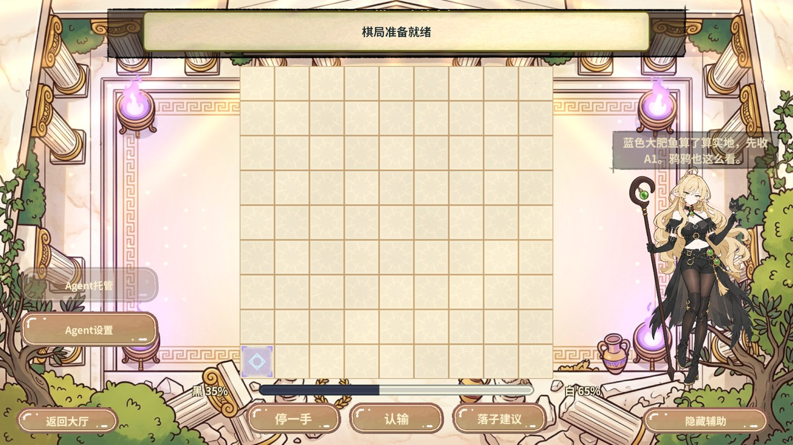
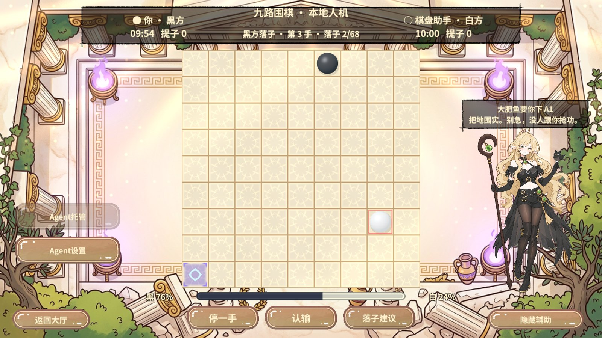
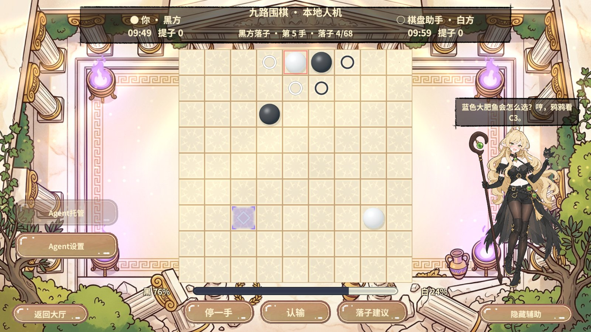
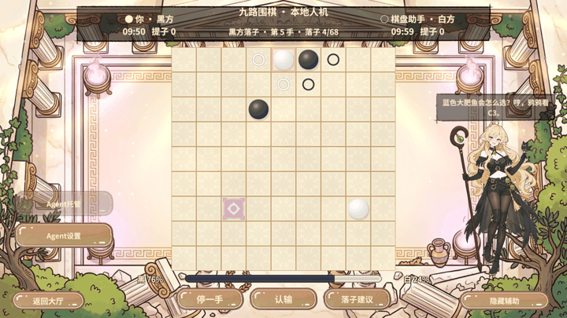

断言
| 入口 | 观察结果 |
|---|---|
| Excel 与导表 | 保留旧行、列宽和类型，RevCLI 数据导出只写入 PvpYayaLine。Play 从 PC AB 读取 52 行，实际立绘和气泡正常。两次实地分析依次使用不同台词，开局和云端手动建议都正确说明蓝色大肥鱼的角色。 |
| 本地人机 | 固定棋谱 F9、H3、D7、E9 后，第三个获建议的回合用同一份两手搜索寻找诱饵。内部评分首选 E8 为 -1，诱饵 C3 为 -23。自动建议和主动询问均指向 C3，胜率仍为固定回复的黑 76%。连续问棋轮换台词，保留同一落点。 |
| 合法性 | 询问前后棋谱序号与指纹一致。玩家随后通过正式落子入口提交 C3，旧提示清除。 |
| 局域网 | 两轮合并测试及独立复测均在局域网握手时超时，未进入对弈。本轮只确认夹具清理，上一轮同一玩法代码已有 22 项 UTP 断言通过。 |
诱导只在人机的玩家回合生效。同一棋面只计一次，有明显可反制的合法候选才改推荐。联机继续使用正常建议。气泡和格子共用业务建议，分别经 RevUI 和现有棋盘 Shader 呈现。
Unity 实拍
原图 1920 × 1080，JPEG 压缩为 1600 像素宽。动图由实际连拍生成。








复现与范围
RevCLI 使用 excel.plan、excel.export 导表。沿用当前分包配置以 ab.build 构建 PC、Android 各 82 包，并逐文件核对发布目录。rev_discover 确认动作，rev_call 进入 Play 并从大厅进入 PVP。rev_run 使用 pvp.analysis-fixture 的 baitBoard=true、pvp.action 和真实 ui.click 执行 40 步，退出并停止 Play。Unity 新增错误为 0。
云端回复使用固定夹具。Android 只构建资源包，本轮未执行真机和公网匹配验收。